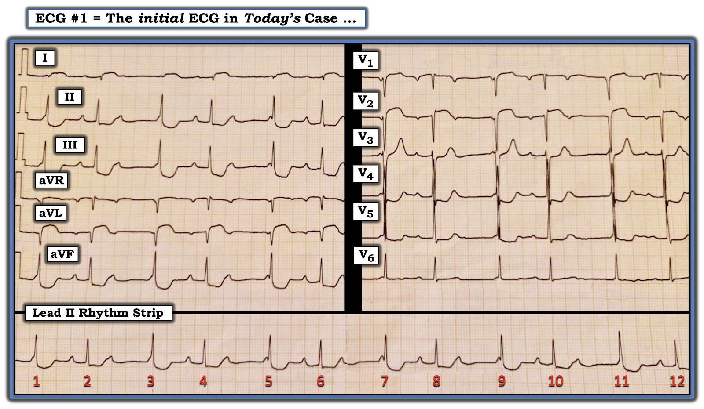
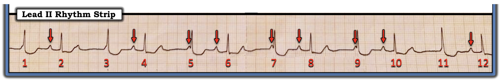
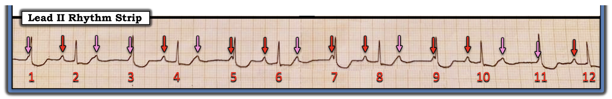
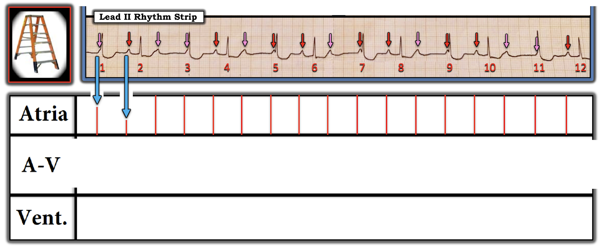
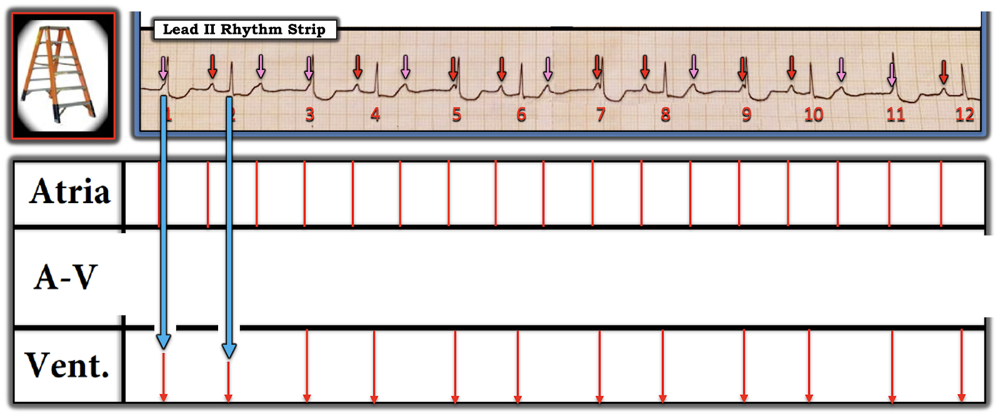
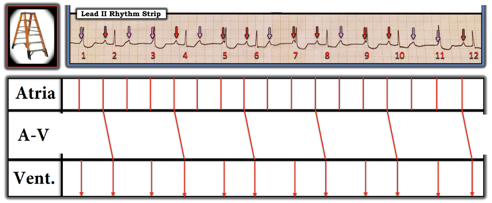
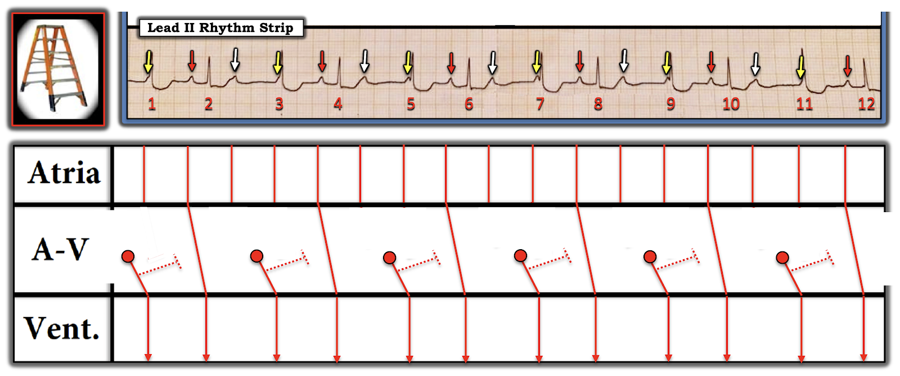
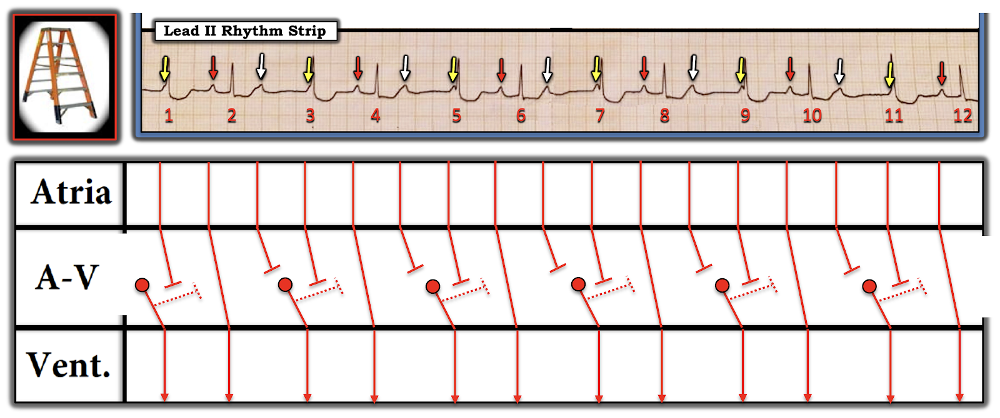
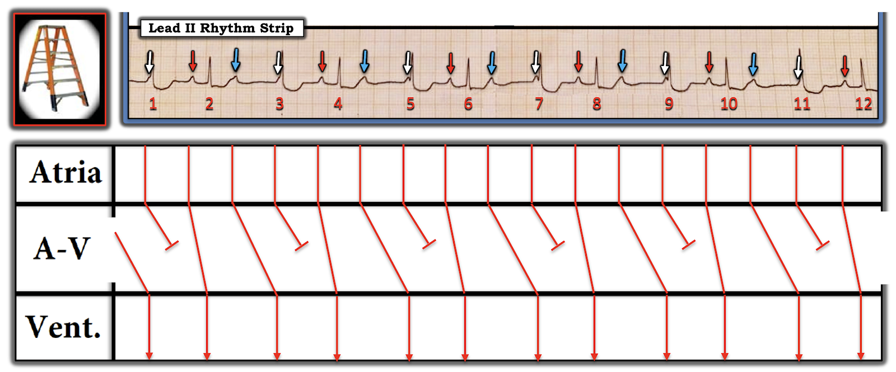
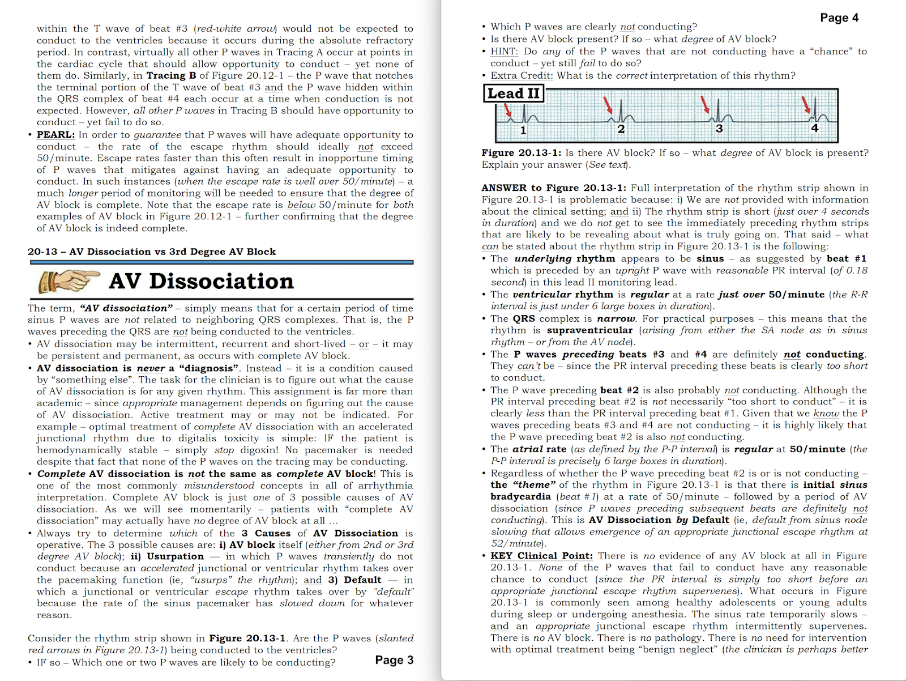

ECG Blog #376 — Thiếu niên 15 tuổi bị sốt ...
Điện tâm đồ 12 chuyển đạo và dải nhịp chuyển đạo dài ở Hình 1 — được ghi từ một nam 15 tuổi trước đó khỏe mạnh, đến khám vì sốt và tiêu chảy. Bệnh nhân ổn định huyết động. Không đau ngực.
- BẠN sẽ đọc điện tâm đồ ở Hình 1 như thế nào?
- Nhịp tim là gì?
- Chẩn đoán lâm sàng mà bạn nghi ngờ là gì?


=====================
LƯU Ý: Nhằm tối ưu tính thiết thực lâm sàng và hiệu quả thời gian để đi đến chẩn đoán — tôi trình bày từng bước cách tiếp cận của tôi đối với ca hôm nay.
=====================
SUY NGHĨ CỦA TÔI về điện tâm đồ ban đầu trong ca hôm nay:
Với những ca bệnh nhân ổn định huyết động — tôi thường thích bắt đầu bằng việc đánh giá nhịp trên dải nhịp chuyển đạo II dài ở phía dưới bản ghi. Sau khi đã chắc chắn rằng không cần hành động ngay để điều trị rối loạn nhịp — tôi thường liếc nhanh qua điện tâm đồ 12 chuyển đạo. Làm như vậy ở Hình 1 — hẳn là rõ ràng rằng ngoài nhịp không đều — nhiều chuyển đạo trên bản ghi 12 chuyển đạo có ST chênh lên hoặc chênh xuống.
- ĐIỂM THEN CHỐT (PEARL) #1: Bệnh thường gặp thì hay gặp. Ở một thiếu niên trước đó khỏe mạnh (15 tuổi trong ca hôm nay) — biểu hiện một bệnh sốt cấp tính không kèm than phiền đau ngực thì rất khó là do nhồi máu cơ tim (MI) cấp. Vì vậy — ngay khi thấy nhịp không đều cùng cả ST chênh lên lẫn chênh xuống trên điện tâm đồ 12 chuyển đạo — tôi lập tức nghi ngờ viêm cơ tim cấp là nguyên nhân khả dĩ nhất của điện tâm đồ bất thường này.
Đánh giá nhịp:
Tôi ưa dùng Cách tiếp cận Ps, Qs, 3R để đánh giá nhịp tim (Xem ECG Blog #185). Xin nhấn mạnh — Việc dùng một cách tiếp cận hệ thống để đọc nhịp sẽ không làm bạn chậm lại. Ví dụ — chỉ trong không quá 10 giây xem dải nhịp chuyển đạo II dài trong ca hôm nay — tôi đã có thể suy ra những điều sau:
- Có một số sóng P hiện diện (các mũi tên ĐỎ ở Hình 2).
- Phức bộ QRS hẹp — nên nhịp là nhịp trên thất.
- Nhịp thất ở Hình 2 không đều (Regular). Thay vào đó — có một kiểu không đều có quy luật (tức là, nhịp “theo nhóm” – group beating) — dưới dạng nhịp đôi (bigeminal) với các khoảng R-R ngắn-rồi-dài luân phiên.
- Ít nhất một số sóng P trong nhịp hôm nay có liên quan (Related) tới các phức bộ QRS lân cận. Chúng ta biết điều này — vì nhiều khoảng PR lặp lại. Như vậy, ở Hình 2 — Ta thấy khoảng PR trước mỗi QRS kết thúc một chu kỳ ngắn hơn đều như nhau! (tức là, Các khoảng PR trước các nhát #2, 4, 6, 8, 10 và 12 đều = 0.24 giây — điều này cho ta biết rằng mỗi sóng P này đang được dẫn truyền, dù kèm blốc AV độ 1).
- Ta cũng biết rằng trong khi một số sóng P ở Hình 2 được dẫn truyền — các sóng P khác thì không được dẫn truyền (điều mà ta biết được vì các sóng P có mũi tên ĐỎ xuất hiện ngay trước khởi đầu các nhát #5, 7 và 9 có khoảng PR quá ngắn để có thể dẫn truyền).
- Vì phức bộ QRS gần nhất với các sóng P không dẫn truyền này (tức là, phức bộ QRS của các nhát #5,7,9) — hẹp và trông rất giống QRS của các nhát dẫn truyền từ xoang #2,4,6,8,10 và 12 — ta có thể cho rằng các nhát #5,7,9 là các nhát bộ nối. Và vì tần số thoát của nút AV ở trẻ em và thiếu niên có thể nhanh hơn ở người lớn (tức là, 50 đến 80/phút — thay vì 40 đến 60/phút) — các nhát #5,7 và 9 có thể là các nhát thoát bộ nối.
- Cuối cùng — Nhịp nhĩ nền ở Hình 2 có lẽ đều. NẾU quả thật như vậy — thì sẽ có nhiều sóng P hơn phức bộ QRS, nghĩa là nhiều khả năng có một dạng blốc AV độ 2 nào đó. Và, việc thấy nhịp theo nhóm (group beating) — đi kèm với một nhịp nhĩ đều — cùng với một số khoảng PR lặp lại — sẽ gợi ý mạnh mẽ dẫn truyền Wenckebach.
- Xin nhấn mạnh: Chúng ta vẫn chưa chứng minh các giả định trên. Dù vậy — ghi nhớ rằng “Bệnh thường gặp thì hay gặp” — và — tuân theo cách tiếp cận hệ thống Ps, Qs, 3R để đọc nhịp — cho phép chúng ta chỉ trong vài giây nghi ngờ chẩn đoán lâm sàng và chẩn đoán nhịp khả dĩ nhất trong ca hôm nay.


LÀM THẾ NÀO để chứng minh các giả định của chúng ta:
Bước MẤU CHỐT để chứng minh các giả định — là xác định rằng nhịp nhĩ nền ở Hình 2 quả thật đều. Việc này DỄ thực hiện nhờ dùng compa đo (calipers).
- Đặt compa đo theo khoảng P-P gợi ý bởi bất kỳ 2 sóng P liên tiếp nào ở Hình 2 mà ta chắc chắn xác định được. Đó có thể là khoảng P-P giữa mũi tên ĐỎ thứ 3 và thứ 4 ở Hình 2 — giữa mũi tên ĐỎ thứ 5 và thứ 6 — hoặc giữa mũi tên ĐỎ thứ 7 và thứ 8.
- Nhận thấy rằng khoảng P-P thay đổi nhẹ là thường gặp (được gọi là loạn nhịp xoang) — các mũi tên HỒNG ở Hình 3 gợi ý vị trí khả dĩ của các sóng P xoang nền. Ủng hộ cho việc các sóng P xoang có lẽ đang ẩn dưới mỗi mũi tên HỒNG này — là sự hiện diện ở Hình 3 của một “bướu” nhỏ hoặc khía tại mỗi vị trí đó (khi so với hình dạng của sóng ST-T hoặc phức bộ QRS bình thường trên dải nhịp này).
- ĐIỂM THEN CHỐT (PEARL) #2: Dùng compa đo để “dò bước” khoảng P-P đã chọn giúp việc tìm vị trí khả dĩ (dưới các mũi tên HỒNG) của các sóng P xoang xuất hiện đều đặn này trở nên nhanh và dễ.


ĐIỂM THEN CHỐT (PEARL) #3: Lý do việc xác định một nhịp nhĩ nền đều lại hữu ích đến vậy (như ta đã làm ở Hình 3) — là vì làm như thế sẽ loại trừ các nguyên nhân khác gây nhịp theo nhóm, như PAC (kể cả PAC bị blốc) và khoảng ngưng xoang (như thường thấy trong hội chứng suy nút xoang).
- Điểm MẤU CHỐT: Một trong những tiêu chuẩn MẤU CHỐT để nhận diện các blốc AV — là nhịp nhĩ phải đều (hoặc ít nhất gần như đều — vì khoảng P-P có thể thay đổi nhẹ nếu có loạn nhịp xoang). Ngược lại — các sóng P rõ ràng xuất hiện quá sớm hoặc quá muộn so với một nhịp xoang thì ít khả năng là do blốc AV hơn nhiều.
Tổng hợp lại tất cả: Chúng ta đã xác định rằng nhịp hôm nay là nhịp trên thất với “nhịp theo nhóm” — và có nhịp xoang đều ở nền. Một số sóng P được dẫn truyền — nhưng số khác thì không. Có nhiều sóng P (tức là, các mũi tên màu ở Hình 3) hơn phức bộ QRS — vì vậy, dường như có một dạng blốc AV độ 2 nào đó, dù ta chưa xác định được cơ chế chính xác.
- Như đã nhấn mạnh trong ECG Blog #326 (và như tôi điểm lại ở PHẦN BỔ SUNG bên dưới) — Mobitz I, blốc AV độ 2 (tức là, Wenckebach AV) — cho đến nay (!) là dạng blốc AV độ 2 thường gặp nhất, đặc biệt khi có nhịp theo nhóm nhất quán như ta thấy ở Hình 3.
- Có nhiều dạng Wenckebach AV khác nhau — một số dạng không cho thấy khoảng PR kéo dài tăng dần rõ rệt cho đến khi có một nhát bị rớt. Ví dụ — Thường thấy các nhát thoát bộ nối đi cùng Wenckebach AV (Xem ECG Blog #63 — để thấy minh họa hiện tượng này).
- Phức bộ QRS hẹp (QRS thường hẹp trong Mobitz I — trong khi hầu như luôn rộng khi có Mobitz II).
- Khoảng PR kéo dài ở những sóng P có được dẫn truyền (điều thường thấy trong Mobitz I — nhiều hơn hẳn so với Mobitz II).
- Chúng ta không thấy các sóng P được dẫn truyền liên tiếp với khoảng PR cố định ở bất cứ đâu trên bản ghi hôm nay (điều bắt buộc phải có thì mới là blốc AV dạng Mobitz II).
- ĐIỀU CỐT LÕI: Về nhịp trong ca hôm nay — tôi đã biết chỉ trong vài giây rằng gần như chắc chắn có một dạng Wenckebach AV nào đó (nhất là khi xét bối cảnh lâm sàng, vốn gợi ý mạnh mẽ viêm cơ tim cấp là căn nguyên nền).
==============================
Nhìn LẠI điện tâm đồ 12 chuyển đạo hôm nay:
Như đã nhấn mạnh ở ĐIỂM THEN CHỐT #1 phía trên — Bệnh thường gặp thì hay gặp. Các bất thường điện tâm đồ ở một thiếu niên trước đó khỏe mạnh, đến khám vì một bệnh sốt cấp tính — khó là do nhồi máu cơ tim cấp (càng đúng hơn trong ca hôm nay — khi cậu bé 15 tuổi này thậm chí không đau ngực). Để rõ ràng — tôi đã in lại bản ghi ban đầu của ca hôm nay ở Hình 4. Tôi thấy những điều sau:
- Về Nhịp: Có nhịp theo nhóm dạng nhịp đôi, với các sóng P xoang đều (như đã mô tả chi tiết ở trên). Điều này gần như chắc chắn thể hiện một dạng Wenckebach AV nào đó.
- Về Các khoảng: Các nhát được dẫn truyền có khoảng PR kéo dài — QRS hẹp ở mọi chuyển đạo — QTc có thể kéo dài nhẹ.
- Trục mặt phẳng trán thẳng đứng (tức là, QRS gần như đẳng điện ở chuyển đạo I — nếu không muốn nói là hơi âm).
- Không có lớn buồng tim.
Về
Thay đổi Q-R-S-T:
- Sóng Q — thấy từng lúc ở các chuyển đạo I,aVL; và ở V1,V2 (tức là, ở một số nhát trong các chuyển đạo này có thấy một sóng r nhỏ khởi đầu).
- Tăng tiến sóng R — phù hợp, với vùng chuyển tiếp (nơi chiều cao sóng R bắt đầu vượt độ sâu sóng S) nằm ở vị trí bình thường giữa chuyển đạo V3 và V4.
- Thay đổi sóng ST-T — Có ST chênh lên dạng vòm (coved) ở các chuyển đạo bên cao I và aVL — cũng như ở chuyển đạo V2 (và ở mức độ ít hơn nhiều tại chuyển đạo V1). Có ST chênh xuống rõ rệt ở từng chuyển đạo dưới. Cũng có ST chênh xuống ở các chuyển đạo V2 đến V4 (dạng dốc xuống ở chuyển đạo V3) — kèm phần cuối sóng T dương ở các chuyển đạo này.
ĐIỀU CỐT LÕI: Điện tâm đồ ở Hình 4 bất thường rõ rệt. Ngoài blốc AV độ 2 Mobitz I có khả năng — nhiều chuyển đạo cho thấy hoặc ST chênh lên hoặc ST chênh xuống không đặc trưng cho bất kỳ vùng giải phẫu cụ thể nào của tắc động mạch vành cấp (nhất là khi có Wenckebach AV, nhưng lại không có ST chênh lên cấp ở thành dưới).
- Như đã nhấn mạnh ở trên — Bệnh sử trong ca hôm nay phù hợp nhất với viêm cơ tim cấp — vì bệnh nhân là một thiếu niên bị bệnh sốt cấp tính, nhưng không đau ngực.
- ĐIỂM THEN CHỐT (PEARL) #4: Các dấu hiệu điện tâm đồ của viêm cơ tim cấp rất đa dạng. Hầu như bất cứ điều gì cũng có thể gặp, tùy căn nguyên cụ thể của viêm cơ tim và mức độ nặng của bệnh. Dù vậy — Người ta thường thấy sóng Q và bất thường sóng ST-T có thể rõ rệt (kèm hoặc không kèm bất kỳ rối loạn nhịp tim nào trong nhiều loại khác nhau) — nhưng phân bố theo kiểu thường không gợi ý một vị trí giải phẫu cụ thể. Đây chính xác là điều ta thấy ở Hình 4.
- Vào những lúc khác — điện tâm đồ của bệnh nhân viêm cơ tim cấp có thể trông rất giống điện tâm đồ của một nhồi máu cấp đang tiến triển. Cả hai bệnh cảnh đều có tăng troponin (có thể tăng rõ rệt) — và đôi khi thông tim (hoặc MRI tim, nếu có) có thể là cách duy nhất để phân biệt 2 bệnh cảnh này.
- Xin nhấn mạnh: Khi bệnh nhân lớn tuổi hơn và đến với bệnh sử đau ngực có vẻ do tim — thì nhồi máu cấp sẽ thường gặp hơn nhiều so với viêm màng ngoài tim cấp, viêm cơ tim, hay viêm cơ tim-màng ngoài tim.
DIỄN TIẾN của ca hôm nay:
Bệnh nhân trong ca hôm nay được chẩn đoán viêm cơ tim cấp. Bệnh nhân diễn tiến tốt với điều trị bảo tồn — và cả bất thường điện tâm đồ lẫn rối loạn nhịp đều hết khi tình trạng lâm sàng cải thiện.

==============================
Vượt ra ngoài phần cốt lõi: Minh họa bằng giản đồ bậc thang ...
Một số rối loạn nhịp phức tạp có thể có nhiều hơn một cách diễn giải nhịp hợp lý. Việc điều này xảy ra trong ca hôm nay — chính là điều khiến việc đọc nhịp hôm nay khó đến vậy.
- Xin nhấn mạnh: Việc xác định chính xác cơ chế rối loạn nhịp hôm nay là không cần thiết để xử trí phù hợp. Thay vào đó — chỉ cần nhận ra rằng nhiều khả năng có một dạng Wenckebach AV nào đó (như ta đã mô tả ở trên) — đi kèm tần số thất chấp nhận được — là đủ về mặt lâm sàng, vì nhịp bình thường nhiều khả năng sẽ trở lại khi viêm cơ tim cấp của bệnh nhân thuyên giảm. Dù vậy — Có thể sẽ bổ ích khi xem lại cách dựng từng bước một giản đồ bậc thang (laddergram) khi cơ chế của nhịp chưa rõ ngay.
Dựng giản đồ bậc thang:
- LƯU Ý: Để biết thêm về những điều cơ bản về CÁCH Đọc (và/hoặc Vẽ) giản đồ bậc thang — Xin xem ECG Blog #188 của tôi —








— — — — — — — —
Khả năng #1: Trước đó ta đã xác định rằng khoảng PR của các sóng P VÀNG quá ngắn để dẫn truyền. Vì vậy tôi nghi ngờ rằng các nhát #1,3,5,7,9 và 11 là các nhát thoát bộ nối — mà tôi đã vẽ thành các vòng tròn ĐỎ nhỏ trong Tầng Nút AV. Điều này khiến tôi phải giải thích đường đi bên trong Tầng Nút AV mà các sóng P VÀNG và TRẮNG đi theo.




ĐIỀU CỐT LÕI:
Như đã lưu ý trước đó — Các rối loạn nhịp phức tạp đôi khi có thể có nhiều hơn một cách diễn giải nhịp hợp lý. Tôi không chắc Khả năng #1 hay #2 mới là lời giải thích đúng trong ca hôm nay. Dù vậy, như đã lưu ý trước đó — Về mặt lâm sàng, điều đó không quan trọng!
- Có một dạng Wenckebach AV nào đó thực sự hiện diện. Tần số thất chung là hơn cả mức thỏa đáng (tức là, tần số trung bình trên 80/phút) — và với chẩn đoán viêm cơ tim cấp — chúng tôi đã dự đoán rối loạn dẫn truyền AV sẽ hết khi tình trạng bệnh nhân cải thiện. Và đúng như vậy — bệnh nhân hồi phục không biến cố.
==================================
Lời cảm ơn: Xin cảm ơn Chaim Katalan (Laniado Hospital, Israel) về ca bệnh và bản ghi này.
==================================

==================================
Các bài ECG Blog liên quan đến ca hôm nay:
- ECG Blog #205 — Điểm lại Cách tiếp cận hệ thống của tôi để đọc điện tâm đồ 12 chuyển đạo.
- ECG Blog #185 — Điểm lại Cách tiếp cận Ps, Qs, 3R để đọc nhịp một cách hệ thống.
- ECG Blog #188 — Điểm lại cách đọc và vẽ giản đồ bậc thang (kèm LIÊN KẾT tới hơn 80 ca có giản đồ bậc thang — nhiều ca có minh họa tuần tự từng bước).
- ECG Blog #236 — Điểm lại 3 loại blốc AV độ 2.
- ECG Blog #63 — về một ca blốc AV kèm các nhát thoát bộ nối.
- ECG Blog #192 — Điểm lại 3 nguyên nhân gây phân ly nhĩ thất (và nhấn mạnh vì sao phân ly nhĩ thất không giống với blốc AV hoàn toàn).
- ECG Blog #186 — Khi nào nên nghi ngờ Mobitz I?
==================================
PHẦN BỔ SUNG (ngày 24 tháng 4 năm 2023):
Một trong những lĩnh vực khó khăn nhất trong đọc rối loạn nhịp là đánh giá các blốc AV. Điều này không nhất thiết phải khó đến vậy ... Tôi điểm lại những điều cơ bản trong ECG Blog #186 — được tóm tắt ngắn gọn trong Audio Pearl dưới đây.
- Trong ECG Blog #236 — ECG Video Pearl #52 dài 15 phút của tôi điểm lại cách nhận diện các blốc AV độ 2 (kể cả blốc AV "mức độ cao").
- Mục 2F (6 trang = Câu trả lời "ngắn") trong cuốn ECG-2014 Pocket Brain của tôi cung cấp phần điểm lại nhanh bằng văn bản về các blốc AV (Tài liệu tải miễn phí).
- Mục 20 (54 trang = Câu trả lời "dài") trong cuốn ACLS-2013-Arrhythmias bản Mở rộng (Expanded Version) của tôi bàn luận chi tiết về việc THẾ NÀO là blốc AV — và thế nào không phải! (Tài liệu tải miễn phí).

- Dưới đây là đoạn trích 7 trang từ cuốn ACLS-2013 Arrhythmias (Expanded Version) của tôi — trong đó tôi điểm lại sự phân biệt giữa phân ly nhĩ thất với blốc AV hoàn toàn.


